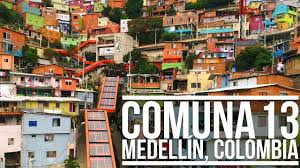
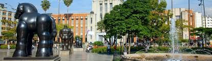
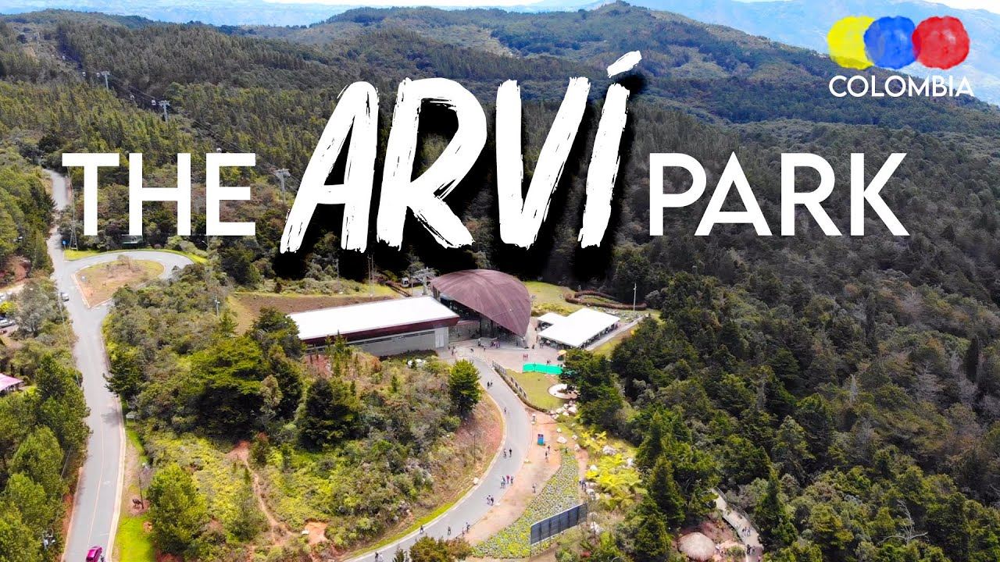

Medellín is a city of eternal spring, known for its mild weather, lush greenery, and innovative spirit. A vibrant destination, it offers breathtaking cable car rides, the artistic charm of Comuna 13, and a mix of modern and traditional Colombian culture. Medellín is a city where history meets progress, offering something for every traveler.
From lush parks to lively festivals like Feria de las Flores, Medellín invites you to explore its unique blend of nature and innovation. Whether you are taking in the art at Plaza Botero or riding the Metrocable to Arví Park, the warmth of the locals and the beauty of the surroundings make every visit unforgettable.
This place has many amazing spots such as:
Comuna 13
Once a troubled area, this neighborhood has transformed into a hub of art and culture. Explore vibrant street art, music, and the inspiring stories behind its revival.

Plaza Botero
This iconic square features larger-than-life sculptures by renowned Colombian artist Fernando Botero. It’s a must-see for art lovers.

Arví Park
A lush ecological park accessible by cable car, offering hiking trails, serene picnic spots, and a refreshing escape from city life.
